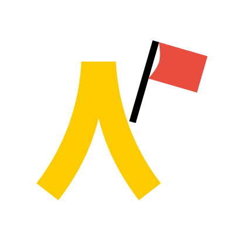

1.開始（タスクと条件）
これまでの議論を下に貼った。 タスク: 困りごとを「誰の／どんな困りか」の1文にして。 条件: 新しい事業アイデアは出さない。改善案もまだ出さない。 これまでの議論: （ここにメモや発言を貼る）

LITALICO 3daysインターンシップ ／ AIの使い方
会話の途中で、足りない一段だけ足す。暗記しなくてよい。
これまでの議論を下に貼った。 タスク: 困りごとを「誰の／どんな困りか」の1文にして。 条件: 新しい事業アイデアは出さない。改善案もまだ出さない。 これまでの議論: （ここにメモや発言を貼る）
最初の答えはたたき台として使う。やり直さなくてよい。 誰が・どの場面か、まだ広い。そこだけ具体にして。
見本の一文は、自分たちの議論に合わせて差し替えてよい。
欲しい形の見本:「放課後のお迎えで、支援級の保護者が先生と3分も話せない」 この短さと粒度で、他の困りも1文ずつ。
1文はこれで十分。今の一段だけやって: まだ話していない切り口を4つ出して。 近いものを1つ推すのは次。改善案はその次。
役割: （必要なときだけ） タスク: 背景: （これまでの議論を貼る） 条件: 出力形式:
今ほしい一段だけ。全部使わなくてよい。会話の途中で、1行足すのでもよい。
視点を広げる。まだ話していない切り口を出す。
これまでの議論: （ここにメモや発言を貼る） お願い: 1. 出てきた困りごとを、「誰の、どんな困りか」の1文に書き換えて 2. まだ話していない切り口を4つ出して 3. どれが今日の議論と一番近いか、根拠つきで1つ推して ただし、新しい事業アイデアはまだ出さないで
同じ困りを、賛成と反対から見る。
この課題仮説について、賛成側と反対側、それぞれの視点から1文ずつ。 事業アイデアは出さないで。
役割は、自分たちの議論に合わせて差し替えてよい。
この困りを、「役割A」の視点と「役割B」の視点、2つの立場から1文ずつ。 例: 保護者と先生、本人と家族。事業アイデアは出さないで。
切り口を出したあと。近いものはまとめる。
今出した切り口は、モレなくダブりなくなっているか確認して。 漏れがあれば指摘して、1つ補って。事業アイデアは出さないで。
1文はできたが、まだ薄いとき。
今の困りについて、重要な点をさらに掘り下げて。 見落としている細部やニュアンスも。事業アイデアは出さないで。
弱点を先に指摘する。改善案は、指摘のあと。
いまの課題仮説: （1〜3行） 次の観点で弱点を指摘して。改善案は、指摘のあと別項で。 - 誰の困りかがぼやけていないか - 検証できない前提はどれか
一般論に見え始めたとき。通用する範囲を先に出す。
この回答が成立するために、暗黙の前提となっている条件や、適用範囲の限界があれば指摘して。 事業アイデアは出さないで。
自分たちの仮説に、あえて反論する。
自分の回答に反論するつもりで考えて。間違いや論理の欠陥があれば指摘して。 改善は、指摘のあと。事業アイデアは出さないで。
頼んだことに対して、足りない項目だけ直させる。
先の回答を、頼んだことごとに0〜5点で自己評価して。 足りない項目があれば、そこだけ直して。事業アイデアは足さないで。
成果物ではなく、お願いの仕方をAIに考えさせる。
課題の解像度を上げるためのプロンプトを作って。 事業アイデアはまだ出さないで。
仕様の穴を埋める。AIから人間に質問させる。
タスクの完成度を高めるために、ユーザーに聞くべきことがあれば質問して。 1問ずつ待って。
事業案の前に、次の30分で決める順を出させる。体験では2問で止めてよい。
今の議論を、事業アイデアに落とす前に、課題の解像度を上げたい。 次の30分で決めるべき問いを、重要な順に5つ質問して。 1問ずつ待って。私たちが答えたら次の問いに進んで。
この課題仮説を、チームの仲間に30秒で説明するなら、どう言う？ 私の言葉で言い直せるように、短い原稿を1つ出して。 専門用語は使わない。事業アイデアは入れない。
骨子が言えてから渡す。見た目はスキルが担う。自分でデザインを磨かない。
事実が薄いとき。ないものは「ない」でよい。
今の説明を支持する数値や調査結果があれば出して。出典も。 ないものは「ない」と書いて。まだ事業案は出さないで。
呼び方は /litalico-presentation でもよい。スキルが先に項目を聞いてくる。生の議論メモのまま投げない。
最終プレゼン資料を作って。 骨子: - 課題: - 論理: - 伝えたいこと:
今のを半分の長さにして。今ほしい一段だけ
プロンプト10 一段深く聞く、または プロンプト12 前提を洗い出す
新しい事業アイデアはまだ出さないで。課題の切り口だけ
プロンプト2 に続けて、プロンプト14 自己採点
プロンプト16 逆質問、または プロンプト17 決める問いを先に聞く
見た目はまだ。骨子（課題と論理）だけ言って
プロンプト7 視点を変える、または プロンプト9 漏れとダブり
これってどういうこと？ 中学生にも分かる言葉で